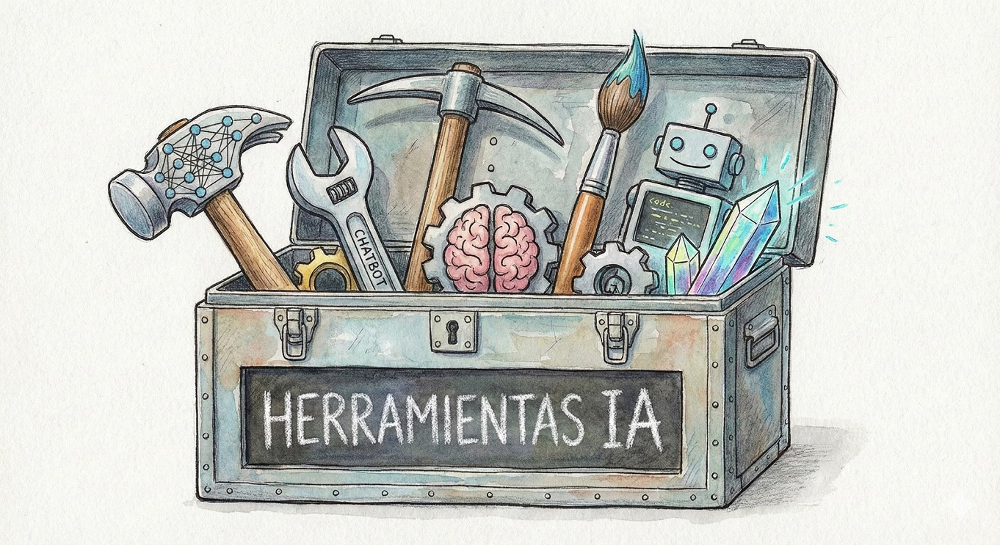

Herramientas IA

Chatbots
Investigación
Productividad
Vibe Coding
Gemini
Gemini (anteriormente Bard) es la familia de modelos de lenguaje grande (LLM) de Google, diseñado para ser multimodal y altamente capaz en diversas tareas, desde la generación de texto hasta el razonamiento complejo.
ChatGPT
Desarrollado por OpenAI, ChatGPT es un chatbot impulsado por los modelos GPT. Es conocido por su capacidad para mantener conversaciones naturales, responder preguntas, generar código y resumir textos de manera coherente.
Microsoft Copilot
Microsoft Copilot es un asistente virtual de inteligencia artificial desarrollado por Microsoft. Utiliza un modelo de lenguaje de gran tamaño (LLM) para generar texto, traducir idiomas, crear diferentes tipos de contenido creativo y responder a tus preguntas de forma informativa. También puede realizar algunas tareas en Windows 11, como escribir código, crear presentaciones y editar documentos.
Claude
Son modelos de lenguaje desarrollados por Anthropic. Se destacan por su enfoque en la seguridad y la utilidad, siendo particularmente buenos en el resumen, la escritura creativa y el manejo de conversaciones largas y complejas.
Grok
Es un gran modelo de lenguaje (LLM) desarrollado por xAI, la empresa de Elon Musk. Se distingue por su capacidad para responder a preguntas con humor e ingenio, y por su acceso en tiempo real a la información a través de la plataforma X (anteriormente Twitter).
Deepseek
Es una plataforma de modelos de lenguaje abierto desarrollada por DeepSeek AI. Ofrece modelos multilingües y multimodales de alto rendimiento, destacándose por su modelo de codificación (DeepSeek Coder) y su compromiso con la investigación abierta.
Qwen
Son modelos de lenguaje de código abierto de Alibaba Group. Están diseñados para ser potentes y eficientes, capaces de manejar una amplia gama de tareas, incluyendo comprensión, generación y programación, con un fuerte enfoque en el soporte multilingüe.
Mistral
Es un modelo de lenguaje de alto rendimiento desarrollado por la compañía francesa Mistral AI. Es conocido por su eficiencia, velocidad y excelencia en razonamiento, matemáticas y codificación, a menudo superando a modelos más grandes en tareas específicas.
Kimi
Un asistente de chat con IA desarrollado por Moonshot AI. Su principal diferenciador es su capacidad para manejar ventanas de contexto extremadamente grandes, lo que le permite procesar y resumir documentos y libros muy extensos con gran precisión.
Chat Z
ChatZ (frecuentemente referido como Chat Z) es una plataforma de inteligencia artificial diseñada para facilitar la interacción entre usuarios y modelos de lenguaje avanzados.
Algunos puntos clave sobre esta herramienta:
✔ Acceso a modelos potentes: Permite interactuar con tecnologías como GPT-4 de OpenAI y modelos de la familia Claude de Anthropic en una sola interfaz.
✔ Multimodalidad: Estos servicios permiten no solo chatear, sino también generar imágenes, analizar documentos PDF y realizar búsquedas web en tiempo real.
✔ Versatilidad: Se utiliza comúnmente para redacción de textos, programación, traducción y resolución de dudas complejas.
Perplexity
Es un motor de conocimiento conversacional y motor de búsqueda potenciado por IA. Su principal característica es que proporciona respuestas directas y concisas, citando siempre las fuentes web que utilizó para generar esa respuesta.
Consensus
Consensus es un motor de búsqueda basado en IA, diseñado específicamente para la investigación académica y científica. Permite a los usuarios plantear preguntas de investigación y recibir respuestas basadas en evidencia, sintetizadas a partir de una base de datos de más de 200 millones de artículos revisados por pares.
Atlas Research
Atlas Research es un espacio de trabajo impulsado por IA, diseñado para la investigación computacional. Unifica el flujo de trabajo de investigación al permitir a los usuarios:
✔ Escribir y ejecutar código en Jupyter notebooks integrados.
✔ Analizar artículos mediante el procesamiento de PDF con IA para extraer métodos y hallazgos.
✔ Organizar el conocimiento mediante notas de Markdown vinculadas en un gráfico de conocimiento.
Minimax
MiniMax Agent es un agente de propósito general capaz de completar tareas complejas a largo plazo. Con el respaldo de un sistema multiagente, puede formular soluciones expertas mediante una planificación de varios pasos, desglosar con flexibilidad los requisitos de las tareas y ejecutar múltiples subtareas para obtener el resultado final.
Genspark
Un motor de búsqueda y descubrimiento impulsado por IA. En lugar de solo enlaces, genera 'Sparkpages', páginas de resumen creadas por IA sobre un tema específico, combinando información de múltiples fuentes.
Manus
Un asistente de escritura con IA enfocado en la generación de contenido extenso y la optimización de SEO. Está diseñado para ayudar a crear artículos, entradas de blog y textos de marketing de manera rápida y eficiente.
Gemini Notebook
Gemini Notebook (hasta julio de 2026, NotebookLM) es una herramienta en línea de investigación desarrollada por Google. Utiliza inteligencia artificial para ayudar a los usuarios a interactuar con sus propios documentos (llamados fuentes): genera resúmenes, explicaciones y respuestas basados en el contenido cargado. Las respuestas pueden guardarse como notas que a su vez pasan a formar parte de la misma fuente de datos. También incluye la opción "Resumen de audio", que resume los documentos en un formato conversacional, similar a un podcast.
Notion
Una plataforma de productividad todo en uno que combina notas, tareas, wikis y bases de datos. Recientemente ha integrado funciones de IA (Notion AI) para resumir, escribir, traducir y organizar contenido.
Make
Una plataforma de automatización visual que permite conectar aplicaciones y servicios (APIs) para crear flujos de trabajo (escenarios) sin necesidad de código.
n8n
n8n (pronunciado n-ocho-n) te ayuda a conectar cualquier aplicación con una API y a manipular sus datos con poco o ningún código.
n8n es:
✔ Personalizable: flujos de trabajo altamente flexibles y la opción de crear nodos personalizados.
✔ Práctico: usa npm o Docker para probar n8n, o la opción de alojamiento en la nube si prefieres que n8n se encargue de la infraestructura.
✔ Privado: puedes aloja n8n tú mismo para mayor privacidad y seguridad.
Firebase Studio
Es una herramienta de Google que forma parte de la plataforma Firebase. Está orientada a desarrolladores para construir, probar e implementar aplicaciones. El Studio ofrece un entorno para experimentar con las capacidades de IA y prompts dentro de los proyectos de desarrollo.
Google AI Studio
Es una herramienta online que permite a los desarrolladores y usuarios experimentar y prototipar rápidamente con los modelos de Gemini. Es el entorno ideal para crear prompts, encadenar modelos y construir aplicaciones de IA.
Lovable
Una plataforma de 'Vibe Coding' que permite a los desarrolladores construir sitios web o aplicaciones web sin necesidad de utilizar código.
Replit
Replit, anteriormente conocida como Repl.it, es un entorno de desarrollo integrado (IDE) en línea que admite diversos lenguajes de programación. En septiembre de 2024 se convirtió en un agente de IA para la automatización del desarrollo de software, con el que los usuarios pueden interactuar en lenguaje natural.
Antigravity
Google Antigravity es una plataforma de desarrollo con agentes que evoluciona el IDE hacia una era centrada en los agentes. Antigravity permite a los desarrolladores operar a un nivel superior, orientado a tareas, gestionando agentes en diferentes espacios de trabajo, manteniendo la experiencia habitual de un IDE de IA. Antigravity integra los agentes en su propia interfaz y les proporciona las herramientas necesarias para operar de forma autónoma en el editor, la terminal y el navegador, priorizando la verificación y la comunicación de alto nivel mediante tareas y artefactos.
Runway
Runway (a menudo conocida como RunwayML) es una plataforma líder de IA generativa especializada en la creación y edición de video de alta fidelidad. A partir de diciembre de 2025, es reconocida por sus modelos de video líderes en la industria, que destacan en simulación física y realismo cinematográfico.
Recursos Adicionales
Accedé a una página con enlaces a cursos cuidadosamente seleccionados, canales de WhatsApp y otros recursos útiles de IA.
¡Todo en una sola página!